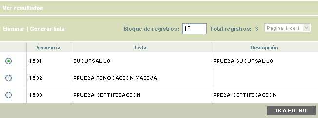
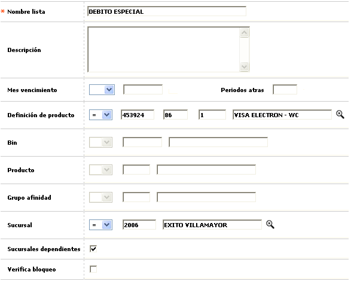
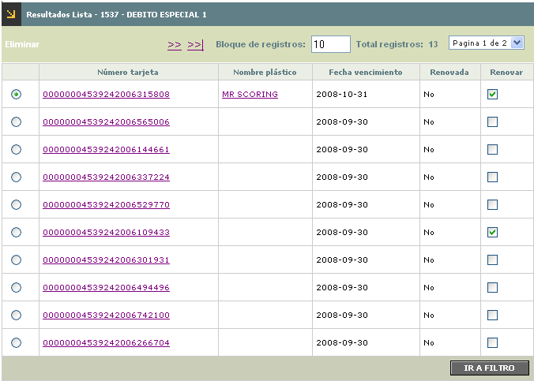
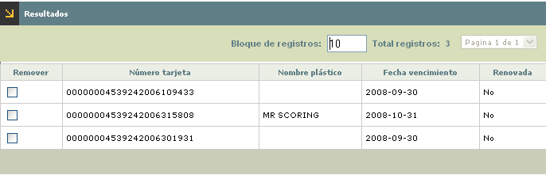

Renovación masiva débito
Mediante esta opción se efectúa el proceso que permite actualizar la fecha de vencimiento de las tarjetas seleccionadas por la entidad de acuerdo con los criterios ingresados.
Al ingresar a la opción se despliega un formulario inicial que contiene las listas generadas por la entidad y que han sido utilizadas en los procesos anteriores de renovación.

El formulario contiene el hipervínculos Ver resultados que permite consultar las tarjetas incluidas en cada una de las listas de renovación de acuerdo con los criterios ingresados. Adicionalmente contiene los enlaces:Eliminar y Generar lista.
Adicionar: si el usuario invoca la opción Generar lista, se despliega un nuevo formulario con los siguientes campos.

Descripción de campos
Nombre lista |
Campo alfanumérico obligatorio en el que se registra el nombre con el cual se va a identificar cada una de las listas de renovación generadas por la entidad. |
|
Descripción |
En este campo alfanumérico se ingresan datos relevantes que sirven de complemento por ejemplo para la identificación de la lista o para indicar algunas características propias de la misma. |
Mes de vencimiento |
Campo en el cual puede determinar si las tarjetas a incluir en la lista de renovación son aquellas con fecha de vencimiento = ó <= al valor ingresado en el campo adjunto y que permite registrar en formato YYYY-MM la fecha a tomar como referencia por el sistema, de acuerdo con la condición seleccionada. |
Periodos atrás |
Este campo es complementario del campo anterior y solo se habilita si la condición seleccionada es <=. Permite indicarle al sistema el número de meses anteriores a la fecha de vencimiento registrada en el campo anterior que deben tener las tarjetas para ser incluidas en la lista. |
Mes de vencimiento |
Campo en el cual puede determinar si las tarjetas a incluir en la lista de renovación son aquellas con fecha de vencimiento = ó <= al valor ingresado en el campo adjunto y que permite registrar en formato YYYY-MM la fecha a tomar como referencia por el sistema, de acuerdo con la condición seleccionada. |
Producto |
En este campo se selecciona si la condición a tener en cuenta es que el producto al que pertenecen las tarjetas para incluirlas en la lista sea = o ¡= al producto débito seleccionado mediante la lista de valores. Cuando se ha deicidido utilizar este campo como criterio, se inhabilitan los campos Bin, segmento y grupo de afinidad. |
Bin |
Campo en el que se indica si el bin asociado con el producto débito al que deben pertenecer las tarjetas para ser incluidas en la lista tiene que ser = ó ¡= al bin seleccionado de la lista de valores. Este campo solo se habilita cuando en el campo Producto no se haya seleccionado ningún valor. |
Segmento |
Este campo permite señalar si el segmento asociado con el producto débito al que deben pertenecer las tarjetas para ser incluidas en la lista tiene que ser = ó ¡= al segmento seleccionado de la lista de valores. Este campo solo se habilita cuando en el campo Producto no se haya seleccionado ningún valor. |
Grupo de afinidad |
Campo en el que se indica si el grupo de afinidad asociado con el producto débito al que deben pertenecer las tarjetas para ser incluidas en la lista tiene que ser = ó ¡= al grupo de afinidad seleccionado de la lista de valores. Este campo solo se habilita cuando en el campo Producto no se haya seleccionado ningún valor. |
Sucursal |
En este campo se indica si las tarjetas a incluir en la lista son aquellas cuya sucursal de radicación sea = ó ¡= a la sucursal seleccionada por medio de la lista de valores. |
Sucursales dependientes |
Si en el campo anterior se ha seleccionado algún valor, mediante este check se le indica al sistema si se deben incluir/excluir las tarjetas pertenecientes a las sucursales que dependan de la que se haya seleccionado. |
Verifica bloqueos |
Campo que se marca para indicar si el sistema debe evaluar que los bloqueos actuales de las tarjetas permitan la acción de renovación para que éstas puedan ser incluidas en la lista. |
Es importante aclarar que además de las condiciones señaladas en este formulario, el sistema evalúa si de acuerdo con los parámetros del producto, en el formulario de eventos, bloque renovación el campo permite renovación masiva se encuentra marcado. En caso que el campo no esté marcado, así las tarjetas pertenecientes al producto cumplan con todas las condiciones para ser incluidas en la lista de renovación, ninguna de ellas será incluida.
Adicionalmente al campo Lista que es el único obligatorio, por lo menos alguno de los otros campos contenidos en el formulario debe ser utilizado como criterio para que la lista se pueda generar.
Ver resultados: si el usuario selecciona una lista e invoca el hipervínculo Ver resultados , se despliega un wizard de dos pasos en el que se muestran todas las tarjetas que cumplieron con los criterios seleccionados al momento de generar la lista.
La primera página del wizard contiene el botón especial renovar todas que le permite al usuario efectuar el proceso de renovación para todas las tarjets contenidas en la lista; adicionalmente mediante la opción Eliminar el usuario puede retirar cualquiera de las tarjetas.

Descripción de campos
Número tarjeta |
Campo que muestra el número de cada una de las tarjetas que cumplieron los criterios para ser incluidas en la lista de renovación. |
Nombre plástico |
En este campo se despliega el nombre actual del realce de cada una de las tarjetas. |
Fecha vencimiento |
Campo que muestra en formato YYYY-MM-DD la fecha actual de vencimiento de las tarjetas incluidas en la lista. |
Renovada |
En este campo se indica para cada tarjetas Si o No se le aplicó ya el proceso de renovación. |
Renovar |
Campo que permite marcar las tarjetas a las cuales se les desea aplicar el proceso de renovación, cuando éste no se desea aplicar para todas las tarjetas de la lista. |
Después de haber seleccionado las tarjetas a renovar y al desplazarse a la segunda página del wizard mediante el botón de navegación, se muestra el resumen de los registros a renovar. El formulario cuenta con un check que permite marcar aquellas tarjetas que por alguna causa ya no se desea renovar y mediante el botón finalizar se efectúa el proceso respectivo.

Renovar todas: si desde la primera página del wizard de resultados el usuario invoca el botón Renovar todas, el sistema ejecutará el proceso de renovación de todas las tarjetas contenidas en la lista para las cuales el indicador de estado mostrado en el campo Renovada sea No. Una vez que el proceso ha finalizado, las tarjetas quedan con estado Renovada = Si y se inhabilita el check Renovar.